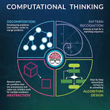
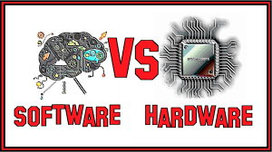

People should be cooperative and we should work together and judge other people so quick. Society should more connected and people shouldn't be so separated. People should take some time to understand each other. You can't judge because you can lose a potential friend.

Computational Thinking is Decomposing breaking it down. Pattern Recognition noticing patterns. Abstraction is making it less specific. Algorithim is they process.
Computer system is divided into hardware and software. Hardware is they physical items. Software is they code and the non-physical items.
In this module we learned how to navigate the Mac. We also learned all they attributes. Then we found out how to use finder and order files.